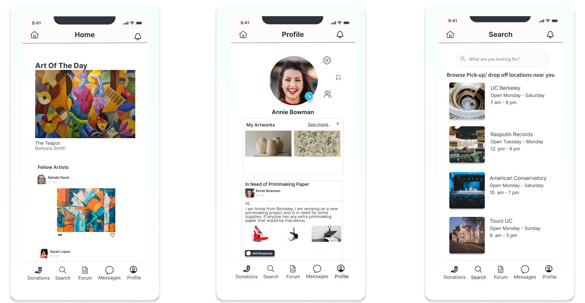
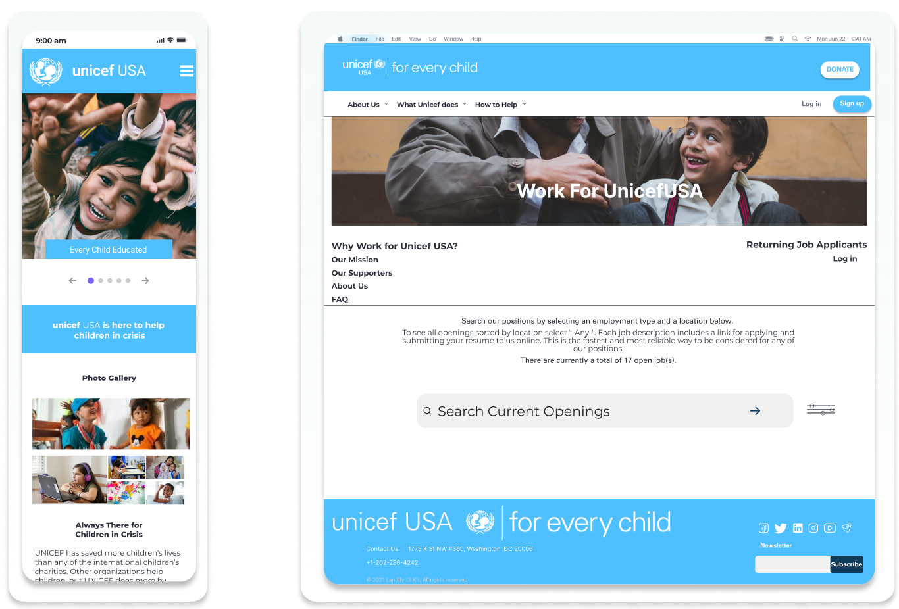
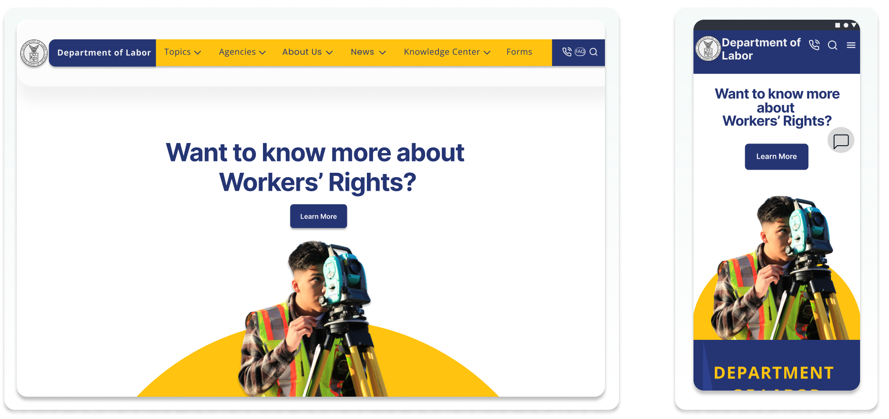
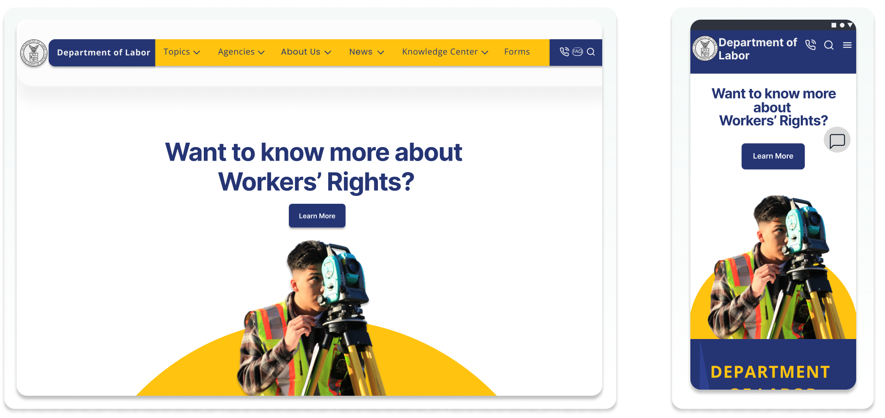

Catherine McField
I specialize in user research.
Skills
User Research
User Empathy
Qualitative Interviews
Storyboarding
Prototyping
My Work

A mobile platform
A mobile platform
for studio artists
to
communicate
and donate
supplies
to each other
Designed with Lily Yang & Ashlyn Martin

A non profit Redesign to
Designed with Jasmina Venecia, Margaret
 
